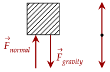
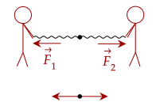
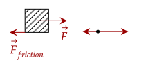
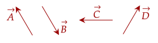
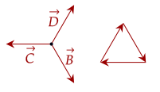
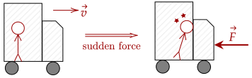

Sir Isaac Newton was a physicist and polymath who made various contributions to physics. In his book called the Principia, he noted three laws that govern how force works. His first law is also called the Law of Inertia.
Before dealing with the formal definition of the Law of Inertia, let's first make some observations. First, let's observe an object at rest.
We know that objects at rest tend to stay at rest unless something happens to them. For example, a box on the floor won't spontaneously move unless something, i.e, a force is acted upon it.
This may lead us to the (incorrect) conclusion that an object at rest has no force acting on it.
This is wrong. In our example with the box on the floor, there is a force of

Observing the figure, the force pulling down and the force pushing up (called the
Another example of balanced forces is two people pulling in a tug of war. If they pull at the same strength, at opposite ends, no movement will occur. Adding the forces up shows that the net force is zero.

Thus, to put it simply, an object at rest may have forces acting on it, but overall when they are added up, the net force on the object is zero.
If no net force on an object at rest means it stays at rest, how about an object in motion? Since every force that pushes or pulls on the object balances out, effectively nothing happens to the motion of the object; it will keep moving forever and ever.
However, on Earth, why do things that move tend to stop? There are various reasons to why things stop, however a common reason is because of the force of

Thus, we see that unbalanced forces causes a change in motion. This leads us into the formal definition of the Law of Inertia.
An object at rest will stay at rest, or an object in motion will stay in motion, unless acted upon by a net external force.
Here, inertia means the tendency for something to remain unchanged; in this case, the tendency for an object to continue doing what it has been doing. This aligns with what we saw: balanced forces lead to nothing happening, while unbalanced forces cause a change in motion.

To keep an object at rest, the forces must balance out to give a net force of zero. This can be done by adding forces B, C, and D.

This law also explains why we continue to go forward when the vehicle we are riding suddenly stops. This is because while the vehicle stops (due to the brakes being pressed or hitting something), no force is acting on us which causes us to stop.

This principle is why wearing a seatbelt is very important when driving; while there is a force that suddenly stops the car, there isn't any force to suddenly stop us, so we get jolted forward. Someone not wearing a seatbelt can hit their head on the dashboard, which may lead to fatal injuries.
The sudden brake causes the car to stop, the occupants inside keep moving, causing them to be thrown forward. Then, they jerk backwards when the brake is let go, as the car stops decelerating yet they keep moving forward.
To avoid this jerk, the break should be pressed for a longer period of time such that the acceleration of the car isn't as quick or as sudden as before.
Here is one approach: push the jar forwards (towards the opening) and then suddenly retract it backwards. Since you are in space, there is no force (or little to no force) to stop the olive from flying out of the jar.
One can also do the opposite. Push the jar opposite to the opening, allowing it to fly away. The olive will remain stationary due to inertia and the jar will fly off.
A more formal definition of the Law of Inertia comes from our study of kinematics. Since there is no change in motion, that means there is no change in velocity. Since the rate of change of velocity is acceleration, that means if there is no net force, there is no acceleration.
We can also write it in terms of the velocity. If acceleration is zero, then there is no change in velocity; it is constant.
This aligns with what we've seen; even with the object at rest. Recall that an object at rest just has its velocity at 0.
However, there is one thing we didn't take into account when talking about inertia, and that is that some objects are much harder to stop or to get moving.
For example, it is much easier to stop a basketball from rolling on the ground than to stop a boulder. We can say that the boulder has "more inertia" in some sense than the basketball. In this case, we should add a new quantity to symbolize this.
The SI unit of mass is the kilogram. We can use this quantity to compare different objects. For example, it is much harder to stop a 100kg boulder than a 0.6kg basketball.
The wooden ball with a lead core has a higher mass than the one without. The one with higher mass has more inertia, while the one with less mass has less inertia.
One way you can use is by hitting the two balls with an object at relatively the same strength. The ball with less mass will move farther than the one with the lead core.
The Law of Inertia is helpful in that it shows us what happens when there is no net force. Newton's second law, the Law of Acceleration, helps us determine what happens when there is a net force.